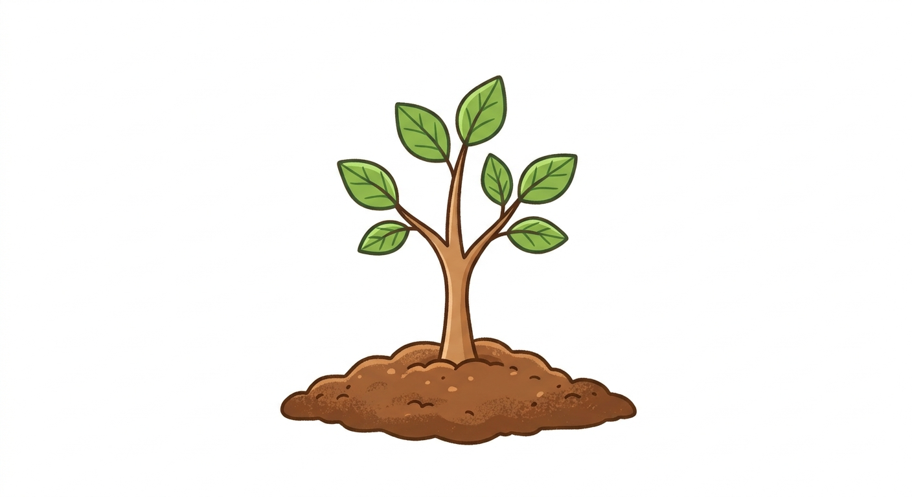
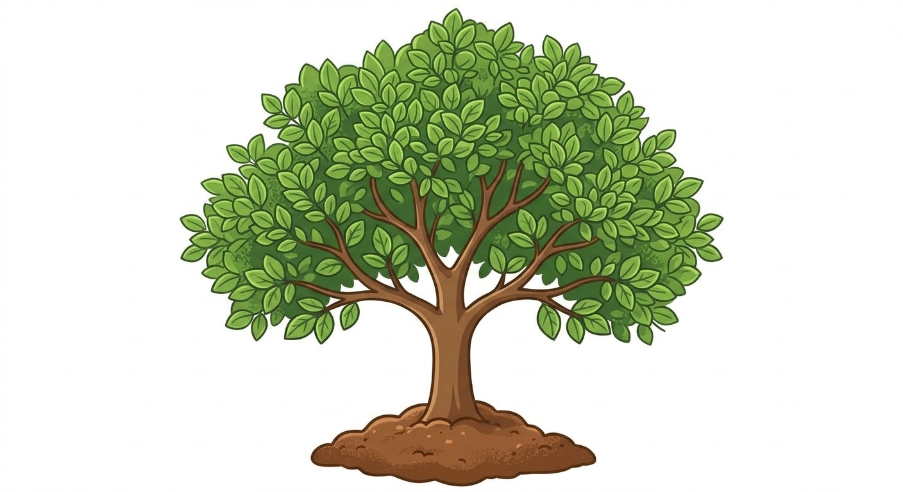
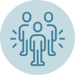
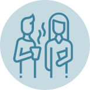
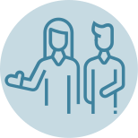
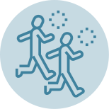
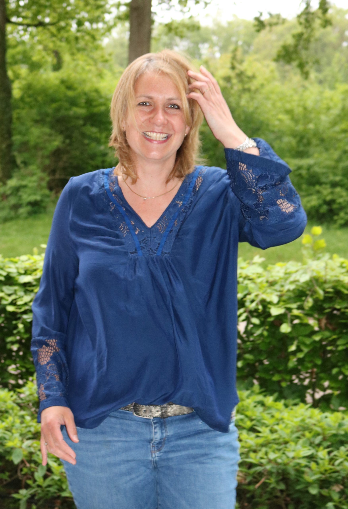
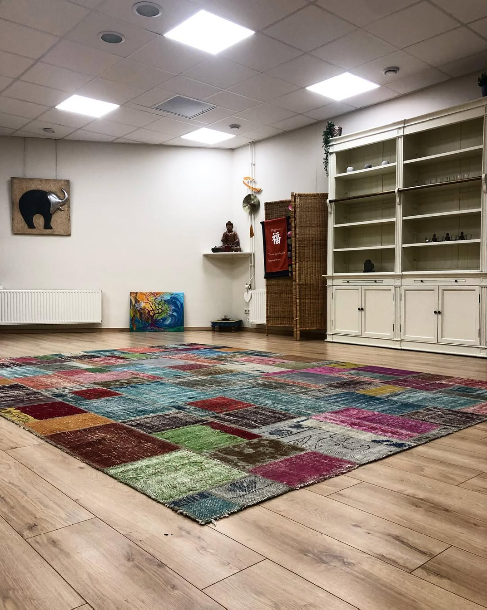

Toe aan rust
en balans?
Hoe is het nu echt met jou?
Mindful bij Elise begeleidt je terug naar rust, vanuit verbinding met jezelf, je lijf en je omgeving.
“Je kunt de golven niet stoppen,
je kunt wel leren surfen.”
Ben je regelmatig onrustig
of gejaagd?
Gaan de dingen niet zoals je wilt dat ze gaan? Ben je snel geïrriteerd of boos? Vind je het lastig om te ontspannen?
Dagen vliegen voorbij, je komt regelmatig tijd tekort door alles wat moet. Je voelt je opgejaagd en zit niet lekker in je vel. Je bent een kei in piekeren, raakt snel geïrriteerd en een goede werk-privébalans bewaren vind je lastig. Het voelt steeds meer alsof je aan het overleven bent in plaats van het leven.
(Deels) herkenbaar?
Praktijk voor bewustwording en groei
Training en coaching voor iedereen die uit balans is geraakt, stress of onrust ervaart, of wil werken aan persoonlijke ontwikkeling, in een veilige leeromgeving.



Training Mindfulness Groep
Acht weken samen leren vertragen, in een kleine groep met persoonlijke aandacht.
Meer info



Hallo, ik ben Elise
Leuk dat je op mijn site kijkt. Ik ontmoet je graag binnenkort in een persoonlijk gesprek, maar hier alvast meer over mij.
Ik geloof, en heb zelf ervaren, dat je gelukkiger kunt leven als je aandacht hebt voor de conditie van je lijf én je geest. Door je bewust te worden van je gedachten, emoties en wat er op een dieper niveau in je omgaat, leer je jezelf pas echt kennen. Daar nemen we vaak te weinig tijd voor.
Wat trainingen bij Elise oplevert
Neem contact op
Neem contact op voor een gratis, vrijblijvende inzichtsessie. Ik hoor graag hoe het met je gaat.
- Kruisspin 54, 7559 EM Hengelo
Vrijblijvende kennismaking
Twijfel je nog? Een kort telefoongesprek of mailtje is voldoende om te ontdekken of mindfulness bij jou past.
